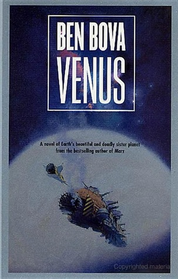

Venus (The Grand Tour #16)
Reseña por Jorge I. Zuluaga

Ver detalles · Ver reseña en GoodReads (necesita cuenta)
Leí este libro en tiempo récord y en medio de la "conmoción mundial" por el descubrimiento de la que sería la primera "biofirma" (un indicio, en este caso indirecto, de la existencia de vida) en un planeta del sistema solar (distinto de la Tierra, naturalmente); imagino que adivinarán cuál.
El resultado fue quedar enviciado con la obra de Bova y con su "Grand Tour" por el sistema solar... solo les digo: ¡hay que leer sus más de 25 relatos que cumplen este año ya 35 años de escritura sin descanso!
Como es predecible, el libro desarrolla, de forma increíblemente entretenida, la historia de dos misiones tripuladas independientes al planeta Venus para rescatar los restos de una primera misión (los pioneros) que termina accidentada en su superficie (no puedo adelantarles si algo vivo queda de ella o alrededor).
La trama incluye muy buena ciencia: como astrónomo, debo reconocer que estuve buscando con cuidado los más sutiles deslices, especialmente en sus descripciones del ambiente en Venus, y no encontré nada grave (con excepción de las muy aceptables licencias literarias del género). Muy buen suspenso y acción (creo que no hay página en la que no pase algo fuera de lo común, una conversación, peleas, golpes); historias de amor y odio (que no pueden faltar en una novela) y, naturalmente, un desenlace sorpresivo (que obviamente no puedo adelantarles).
El único "lunar" (al menos para mí, un "boomer" iberoamericano): está escrita en inglés.
No encontré una traducción asequible de la novela para leerla en mi propia lengua (todavía no sé si existe). Como es obvio, esto hace que no se puedan entender en una lectura de corrido todos los detalles (el vocabulario literario y el cotidiano exige un buen conocimiento de la lengua), pero, naturalmente, la trama se puede seguir sin inconvenientes.
Si están emocionados por el descubrimiento de fosfano en Venus (un gas maloliente y venenoso que en la Tierra es producido por las industrias y unos pocos microorganismos, y en Venus no podría tener una fuente que no fuera biológica), descubrimiento que a la fecha de preparación de esta reseña sigue siendo un misterio no resuelto, no deben dejar de leer "Venus".
Tal vez la vida en Venus (de existir) sea más increíble de lo que creemos, incluso de lo que soñó el maestro Bova.